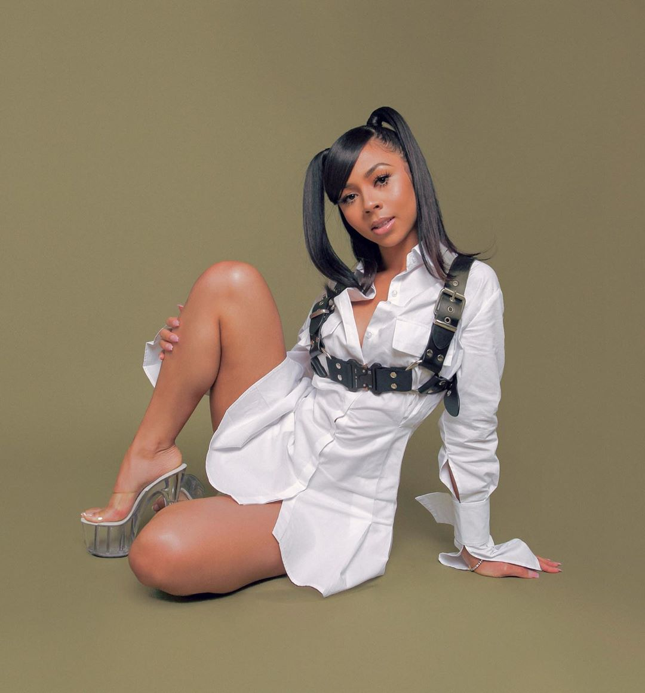
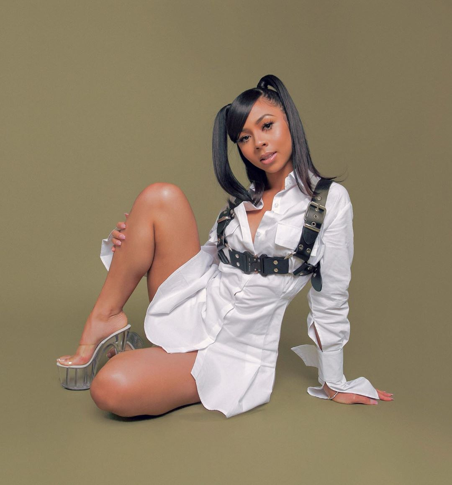

The Importance of Indie Artist
There are hundreds of thousands of artists who make music, but only a select few get to shine through to the top. But, when taking a closer look, we can see that most of the innovations, and trailblazers within the music industry come from smaller, independent artists. This is most likely because they do not have to be as palatable as mainstream artists. Therefore they have more freedom and a much wider range of possibilities as it pertains to the art they create.
Below, there are images of several independent and new artists who are quietly leading the music industry into the future. Both through genre-blending, representation, and nuance.
Examples:
Once a contestant on the popular American Idol, Diamond White has grown up to be a leading artist in genre intersectionality. As a black woman, she defies the implicit bias of the music industry to place black artists into an "urban" category. Making pop and EDM which effortlessly blends into her R&B foundations.
As one of the only females signed onto Gucci Mane's new record label, 1017, Enchanting shows the world how she can easily hang with the 'big dogs'. Often using her male counterpart's lyrics and phrases, and flipping them. Enchanting represents for all women, further emphasizing the multifacetedness of women in musi.
As one of the few Indian Female artists out right now, Raveena makes sure to embrace her culture and heritage in everything she does. First and foremost she values representation, giving Indian-American youth someone to look up to. Raveena is also pushing the industry forward in the way she mixes traditional R&B sounds with traditional South Asian instruments. Raveena is truly an inspiration and leader in the music industry.